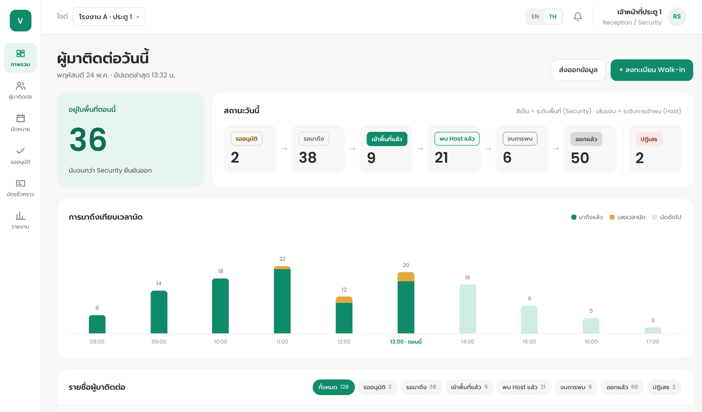
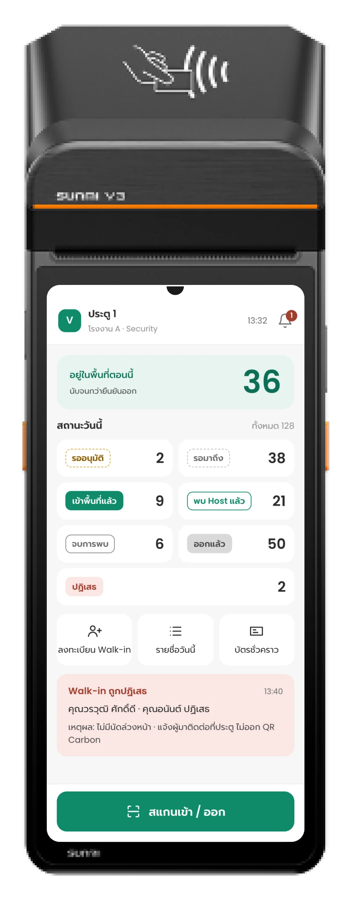
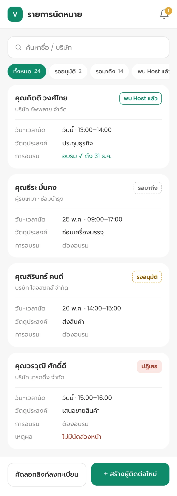

Visitor Management System (VMS)
ระบบจัดการผู้มาติดต่อสำหรับโรงงาน ที่ต้องเชื่อมการทำงานของหลายฝ่าย ตั้งแต่ลงทะเบียน อนุมัติ เข้าพื้นที่ จนออกจากพื้นที่


ภายใต้ NDA หน้าจอทั้งหมดวาดใหม่สำหรับ case study นี้ ชื่อลูกค้า สี โลโก้ และข้อมูลจริง เปลี่ยนเป็นข้อมูลสมมติ
ปัญหาที่ต้องแก้
- 01ข้อมูลผู้มาติดต่อกระจายหลายช่องทางHost รับข้อมูลผู้มาติดต่อผ่านโทรศัพท์ อีเมล และการแจ้งด้วยตนเอง เสี่ยงตกหล่น
- 02ไม่รู้ว่าอนุมัติแล้วหรือยังSecurity ไม่รู้ว่า Host อนุมัติแล้วหรือยัง ต้องโทรถามเอง
- 03มองไม่เห็นว่าใครอยู่ในพื้นที่Security และ Host ไม่รู้ทันทีว่าใครยังอยู่ หรือพบเสร็จแล้วหรือยัง
- R1ตรวจย้อนได้ทุกการเข้า–ออกต้องดูย้อนหลังได้ว่าใครเป็นคนยืนยัน
- R2เก็บ PDPA ConsentVisitor ต้องยืนยัน Consent ก่อนเข้าพื้นที่
ใครใช้ระบบ และต้องการอะไร
ผู้ใช้หลักคือ Visitor, Security, Host และ Admin ส่วน Trainer เข้ามาเฉพาะรายที่ต้องอบรม
เคสนี้เจาะที่ Security กับ Host เพราะสองบทบาทนี้อยู่ในปัญหาทั้ง 3 ข้อ
- 1Visitor ต้องเข้ามาได้โดยไม่ต้องติดตั้งแอปส่วนใหญ่มาครั้งแรก และมาแค่วันเดียว
- 2Security ต้องรู้ทันทีว่าให้ผ่านได้ไหมยืนอยู่ที่ประตูทั้งวัน มีแค่ Handheld จอเล็กในมือปัญหา 02ปัญหา 03
- 3Host ต้องอนุมัติได้จากมือถือไม่ได้นั่งหน้าคอมตลอด แต่เป็นคนเดียวที่รู้ว่า Visitor มาทำอะไรปัญหา 01ปัญหา 02ปัญหา 03
- 4Admin ต้องเห็นภาพรวมและตรวจย้อนได้ดูแลข้อมูลผู้มาติดต่อ การตั้งค่า และรายงานบน Desktop
เมื่อดูรวมกัน ทั้ง 3 ปัญหาคือรอยต่อที่ขาดหายไปของเป้าหมายเดียวกัน แก้ข้อแรกแล้ว ข้อถัดไปจึงแก้ได้
- ปัญหา 01ข้อมูลผู้มาติดต่อกระจายหลายช่องทางรวมทุกช่องทางเข้ามาที่ระบบเดียวไม่ว่า Host สร้างเอง หรือ Visitor กรอกผ่านลิงก์ ทุกการนัดหมายกลายเป็นรายการเดียวกันในระบบ
- ปัญหา 02Security ไม่รู้ว่า Host อนุมัติแล้วหรือยังให้สถานะของการนัดหมาย เป็นตัว Trigger ของแต่ละขั้นเมื่อมีรายการเดียว Host อนุมัติแล้วสถานะเปลี่ยน ขั้นถัดไปจึงเปิดให้ทำ Security เห็นผลที่ประตูโดยไม่ต้องโทรถาม
- ปัญหา 03ไม่รู้ว่าใครยังอยู่ในพื้นที่รู้ได้จากสถานะเดียวกันนั้นเมื่อทุกขั้นเปลี่ยนสถานะของรายการเดียวกัน ตั้งแต่สแกนเข้าจนสแกนออก ระบบจึงบอกได้ว่าใครยังอยู่ และใครออกไปแล้ว
รู้ตลอดเวลาว่าใครยังอยู่ในโรงงาน ตั้งแต่ผ่านประตูจนออกไป
ข้อมูลรวมอยู่ที่เดียว (01) → สถานะบอกว่าไปต่อได้หรือยัง (02) → ระบบรู้ว่าใครยังอยู่ ใครออกไปแล้ว (03)ก่อนออกแบบหน้าจอ ต้องรู้ก่อนว่าสถานะเปลี่ยนตรงไหน และใครเป็นคนเปลี่ยน จึงไล่ Workflow ต่อ ↓
ไล่ Workflow: มาพบ 1 ครั้ง ต้องผ่าน 7 ขั้น
ดู User Roles และ Business Rules ของแต่ละขั้น แล้วพบว่าปัญหาไม่ได้อยู่ในขั้นใดขั้นหนึ่ง แต่อยู่ตรงรอยต่อที่ต้องส่งงานให้คนถัดไป
- 1ลงทะเบียนHost หรือ VisitorHost สร้างนัด หรือส่งลิงก์ให้ Visitor กรอกเองปัญหา 01ข้อมูลมาทางโทรศัพท์ อีเมล และการแจ้งเอง
- 2อนุมัติHostHost ดูข้อมูลแล้วอนุมัติจากมือถือ
- 3Consent และรับ QRVisitorVisitor ยืนยัน PDPA Consent แล้วได้ QRBusiness Ruleยืนยัน PDPA Consent ก่อน ระบบจึงออก QR ให้
- 4อบรม (ถ้าจำเป็น)TrainerTrainer สแกน QR ยืนยันผ่านการอบรม
- 5สแกนเข้าSecuritySecurity สแกน QR และตรวจบัตรประชาชนปัญหา 02ต้องโทรถาม Host ว่าอนุมัติหรือยัง
- 6พบ และจบการพบHostHost ยืนยันพบ และจบการพบ
- 7สแกนออกSecuritySecurity สแกนออก ระบบจึงนับว่าออกแล้วปัญหา 03ไม่รู้ว่า Visitor ออกไปหรือยัง
Host ไม่ต้องรวบรวมข้อมูลผู้มาติดต่อเองอีก
เดิมHost รับข้อมูลผู้มาติดต่อผ่านโทรศัพท์ อีเมล และการแจ้งด้วยตนเอง แล้วรวบรวมเอง เสี่ยงตกหล่น
UX Impact ที่ตั้งใจ เปิดให้ Visitor ลงทะเบียนด้วยตัวเองผ่านลิงก์ โดย Host สามารถแชร์ลิงก์จากหน้ารายการนัดหมายได้
UI Impact วางปุ่มคัดลอกลิงก์ลงทะเบียนในตำแหน่งที่เข้าถึงง่าย และรวมข้อมูลผู้มาติดต่อไว้ในตารางรูปแบบเดียวกัน พร้อม Search, Filter และ Status เพื่อให้ Host ตรวจสอบรายการได้จากหน้าจอเดียว

- Host ไม่ต้องกรอกแทนทุกคนส่งลิงก์ให้ผู้มาติดต่อกรอกข้อมูลเองได้ช่วยลด งานของ Host และโอกาสพิมพ์ผิดตอนคัดลอกข้อมูล เพราะเจ้าของข้อมูลกรอกเองครั้งเดียวหลักการ · Human Error: Slip จากการคัดลอกข้อมูลซ้ำ (Don Norman)
- ส่งลิงก์ หรือสร้างเอง วางคู่กันปุ่ม "คัดลอกลิงก์ลงทะเบียน" กับ "+ สร้างผู้ติดต่อใหม่" อยู่มุมขวาบนบน Desktop และติดล่างจอบนมือถือช่วยลด การหาว่าส่งลิงก์ได้จากตรงไหนหลักการ · Consistency · Fitts's Law · Thumb Zone (Steven Hoober)
- ป้ายสถานะพร้อมจำนวน อยู่เหนือรายการเห็นทันทีว่ามี "รออนุมัติ" กี่รายการ และกดกรองเฉพาะสถานะนั้นได้ในครั้งเดียวช่วยลด เวลาไล่หารายการที่รอ Host จัดการอยู่หลักการ · Visibility of System Status (Nielsen ข้อ 1)
- เห็นการอบรมและเหตุผลปฏิเสธในรายการเลยรู้ว่าใครต้องอบรม ผลอบรมหมดอายุเมื่อไร และทำไมถูกปฏิเสธ โดยไม่ต้องเปิดรายละเอียดช่วยลด การเปิดเข้าไปดูทีละรายการก่อนวันนัดหลักการ · Recognition rather than Recall (Nielsen ข้อ 6)
- แยกสถานะด้วยสี และรูปแบบกรอบรออยู่ = กรอบเส้นประ · กำลังเกิด = กรอบทึบ · จบแล้ว = พื้นทึบ ไม่พึ่งสีอย่างเดียวช่วยลด การอ่านป้ายทีละแถว และช่วยคนที่แยกสีไม่ชัดหลักการ · Pre-attentive Attributes · Use of Color (WCAG 1.4.1)
สรุปในประโยคเดียวข้อมูลผู้มาติดต่อเคยมาหลายทาง ทั้งโทรศัพท์ อีเมล และการแจ้งเอง ดังนั้นหน้าลงทะเบียนจึงให้ Host ส่งลิงก์ให้ Visitor กรอกเองได้ เพื่อให้ข้อมูลทุกทางออกมาแบบเดียวกัน และ Host ไม่ต้องรวบรวมเองอีก
Security ไม่ต้องโทรถามว่าอนุมัติแล้วหรือยัง
เดิมSecurity ไม่รู้ว่า Host อนุมัติแล้วหรือยัง ต้องโทรถามเอง
UX Impact ที่ตั้งใจ Security ไม่ต้องโทรถาม และ Visitor ไม่ต้องรอที่ประตูนาน
UI Impact สถานะรออนุมัติอยู่หัวการ์ด ปุ่มอนุมัติ/ปฏิเสธติดล่างจอ และจอ Security แสดงผลอย่างเดียว ไม่มีปุ่มให้แก้
- Host ตัดสินใจจบในหน้าเดียวข้อมูลผู้มาติดต่อและเอกสารอยู่ในหน้าเดียว ไม่ต้องเปิดหน้าอื่นช่วยลด การสลับหน้า และการจำข้อมูลข้ามหน้าก่อนตัดสินใจหลักการ · Recognition rather than Recall (Nielsen ข้อ 6) · Cognitive Load
- Security เห็นผลเองผลอนุมัติขึ้นที่ประตู ไม่ต้องโทรถาม และไม่ต้องตัดสินใจแทน Hostช่วยลด การโทรถาม และเวลาที่ Visitor ต้องรอที่ประตูหลักการ · Visibility of System Status (Nielsen ข้อ 1)
- สถานะ "รออนุมัติ" อยู่หัวการ์ดHost เห็นทันทีว่ารายการนี้รอตัวเองอยู่ช่วยลด เวลาหาว่ารายการไหนรอให้ตัดสินใจหลักการ · Visibility of System Status · Visual Hierarchy
- ปุ่มอนุมัติและปฏิเสธติดล่างจอตลอดกดได้ทันทีโดยไม่ต้องเลื่อนลงสุด เมื่อ Host อนุมัติจากมือถือช่วยลด การเลื่อนหาปุ่ม และโอกาสกดพลาดบนมือถือหลักการ · Fitts's Law · Thumb Zone (Steven Hoober)
- Security เห็นผล แต่แก้ไม่ได้บนจอของ Security ผลอนุมัติเป็นข้อมูลให้ดู ไม่มีปุ่มให้กดช่วยลด โอกาสที่ผลอนุมัติถูกเปลี่ยนโดยคนที่ไม่รู้ว่า Visitor มาทำอะไรหลักการ · Error Prevention (Nielsen ข้อ 5) · Constraints (Don Norman)
สรุปในประโยคเดียวVisitor ต้องรอ Host อนุมัติก่อน และ Host เป็นคนเดียวที่รู้ว่า Visitor มาทำอะไร ดังนั้นหน้าจอของ Host จึงให้ตัดสินใจจบในหน้าเดียว ส่วนหน้าจอของ Security จึงต้องแสดงผลอนุมัติให้ชัด เพื่อให้เจ้าหน้าที่รู้ว่า Visitor ไปขั้นตอนถัดไปได้หรือยัง โดยไม่ต้องโทรถาม
Security รู้ทันทีว่าใครยังอยู่ในโรงงาน
เดิมSecurity และ Host ไม่รู้ทันทีว่าใครยังอยู่ หรือพบเสร็จแล้วหรือยัง
UX Impact ที่ตั้งใจ Security รู้ทันทีว่าใครยังอยู่ในโรงงาน และไม่ต้องโทรตามกับ Host
UI Impact ช่วยให้ Security เห็นภาพรวมจำนวนผู้ที่ยังอยู่ในพื้นที่ และแยกสถานะของแต่ละคนได้ชัดเจน
- ไม่ต้องเดาว่า Visitor ออกไปหรือยังนับว่ายังอยู่ในพื้นที่จนกว่า Security สแกนออก แม้ Host จบการพบแล้ว เพราะ Visitor อาจยังเดินอยู่ในโรงงานช่วยลด ตัวเลขคนในพื้นที่ที่ไม่ตรงกับความจริงหลักการ · Match between System and the Real World (Nielsen ข้อ 2)
- ไม่ต้องโทรตามกันHost กับ Security เห็นสถานะเดียวกัน เปลี่ยนที่เครื่องไหน อีกเครื่องเห็นทันทีช่วยลด การโทรตามกันระหว่าง Host กับ Securityหลักการ · Visibility of System Status (Nielsen ข้อ 1) · ข้อมูลชุดเดียวทุกเครื่อง
- ตัวเลข "อยู่ในพื้นที่ตอนนี้" ใหญ่และอยู่บนสุดดูตัวเลขเดียวก็รู้ว่ามีผู้มาติดต่อในพื้นที่กี่คนช่วยลด เวลาอ่านจอขณะยืนทำงานที่ประตูหลักการ · Visual Hierarchy · Glanceability (อ่านได้ในการมองครั้งเดียว)
- แสดงแค่สถานะที่ใช้ที่ประตูจอเล็กต้องอ่านง่าย ภาพรวมทุกสถานะไปอยู่บน Desktopช่วยลด ข้อมูลที่ไม่ได้ใช้ที่ประตู ซึ่งทำให้จอเล็กอ่านยากหลักการ · Hick's Law · Aesthetic and Minimalist Design (Nielsen ข้อ 8)
- ผู้มาติดต่อที่ไม่ได้นัด (Walk-in) ถูกปฏิเสธ ขึ้นเป็นแจ้งเตือนบนหน้าแรกผลกลับมาที่ประตูทันที พร้อมเหตุผล ไม่ต้องไปหาช่วยลด การต้องเข้าไปเช็กเองว่า Host ตอบหรือยังหลักการ · Visibility of System Status · แจ้งเตือนมาหาผู้ใช้แทนให้ผู้ใช้ไปหา
- ปุ่ม "สแกนเข้า / ออก" ปุ่มเดียว เต็มความกว้างล่างจองานหลักของ Security กดได้ทันทีด้วยมือเดียวช่วยลด เวลาและการกดพลาด ในงานที่ทำซ้ำทั้งวันหลักการ · Fitts's Law · Thumb Zone (Steven Hoober)
สรุปในประโยคเดียวVisitor ที่พบ Host เสร็จแล้ว อาจยังเดินอยู่ในโรงงาน ดังนั้นหน้าจอของ Security จึงนับว่ายังอยู่จนกว่าจะสแกนออก และวางตัวเลขคนในพื้นที่ไว้บนสุด เพื่อให้เจ้าหน้าที่รู้ได้ทันทีว่าตอนนี้ยังมีใครอยู่ข้างใน
ทางที่ไม่เลือก · ให้ระบบเปลี่ยนเป็น ออกแล้ว ทันทีเมื่อ Host จบการพบ เพราะ Visitor อาจยังอยู่ในโรงงาน
3 รอยต่อที่เคยต้องโทรถามกัน ตอนนี้ระบบส่งต่อให้เอง
3 รอยต่อที่เคยต้องโทรถามกัน ตอนนี้ระบบส่งต่อให้เอง
ขึ้นระบบแล้ว · ยังไม่มีตัวเลขวัดผล- 1ลงทะเบียนHost หรือ Visitorเรื่องที่ 1Visitor กรอกเองผ่านลิงก์
- 2อนุมัติHost
- 3Consent และรับ QRVisitor
- 4อบรม (ถ้าจำเป็น)Trainer
- 5สแกนเข้าSecurityเรื่องที่ 2เห็นผลอนุมัติบน Handheld
- 6พบ และจบการพบHost
- 7สแกนออกSecurityเรื่องที่ 3สแกนออกแล้วจึงนับว่าออก
ทำให้หลายฝ่ายที่เคยต้องโทรถามกัน เห็นข้อมูลชุดเดียวกันและทำงานต่อกันได้ จนโรงงานตอบได้ทุกเวลาว่าใครยังอยู่ข้างใน
สถานะต้องอิงสิ่งที่เกิดขึ้นจริง
ทุกสถานะบอกได้ว่า Visitor อยู่ขั้นไหน และใครเป็นคนยืนยันFlow บอกทาง แต่กฎบอกว่าไปต่อได้เมื่อไร
รู้ว่าใครทำอะไรได้ เมื่อไร และต้องผ่านเงื่อนไขอะไร ก่อนวาดจอกำหนดตัวชี้วัดตั้งแต่เริ่มโปรเจกต์
จับเวลาตั้งแต่ลงทะเบียนจนเข้าพื้นที่ไว้ก่อนใช้ระบบ เพื่อเทียบผลหลังใช้งาน